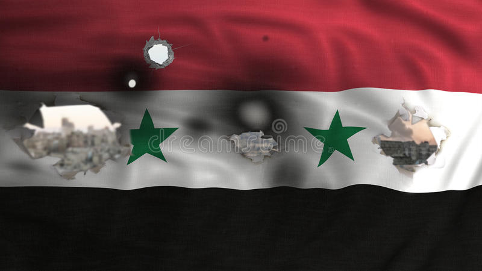

Guerra da Síria
Conflitos internacionais
Rodrigo Ruan Amaral Dos Reis/3°ano, informática
Guerra na Síria
[a]
A Guerra na Síria começou em 2011, dentro do contexto da Primavera árabe quando houve uma série de protestos contra o governo de Bashar al-Assad (1965).
A guerra afetou em cheio a população civil estimada em mais de 24 milhões de pessoas nos primeiros cinco anos e ainda não terminou.
Motivos da Guerra na Síria
A Guerra na Síria foi deflagrada após as denúncias de corrupção reveladas pelo WikiLeaks.

Em março de 2011 são realizados protestos ao sul de Derra em favor da democracia. A população revoltou-se contra a prisão de adolescentes que escreveram palavras revolucionárias nas paredes de uma escola.
Como resposta ao protesto, o governo ordenou às forças de segurança que abrissem fogo contra os manifestantes causando várias mortes. A população revoltou-se contra a repressão e exigiu a renúncia do presidente Bashar al-Assad.
A região do Oriente Médio e Norte da áfrica era sacudida por uma onda de protestos contra o governo que ficaram conhecidas como Primavera árabe.
Em alguns casos, como o da Líbia, o dirigente máximo do país foi afastado. Entretanto, o PRESIDENTE SíRIO RESPONDEU COM VIOLêNCIA E USOU O EXéRCITO PARA REPRIMIR OS MANIFESTANTES.
Por sua vez, a oposição começa a se armar e lutar contra as forças de segurança. Brigadas formadas por rebeldes começam a controlar cidades, o campo e as vilas, apoiados por países ocidentais como Estados Unidos, França, Canadá, etc.
Os dois lados do conflito começam a impor o bloqueio de alimentos aos civis. Também é interrompido ou limitado o acesso à água. Por diversas vezes, as forças humanitárias são impedidas de entrar na zona de conflito.
Além disso, o Estado Islâmico aproveita a fragilidade do país e se lança para conquistar cidades importantes em território sírio.
Sobreviventes relatam que são impostos duros castigos para quem não aceita suas regras. Entre eles estão: espancamentos, estupros coletivos, execuções públicas e mutilações.
Primavera árabe
A Primavera árabe não se trata de uma estação do ano, trata-se de um período de permutações históricas nos rumos da política mundial. Entende-se por Primavera árabe a onda de protestos e revoluções ocorridas no Oriente Médio e norte do continente africano em que a população foi às ruas para derrubar ditadores ou reivindicar melhores condições sociais de vida.
A primeira conquista do movimento foi em dezembro de 2010 na Tunísia, com a derrubada do ditador Zine El Abidini Ben Ali. Posteriormente, a onda de protestos se arrastou para outros países. No total, entre países que passaram e que ainda estão passando por suas revoluções, somam-se à Tunísia: Líbia, Egito, Argélia, Iêmen, Marrocos, Bahrein, Síria, Jordânia e Omã.

Os protestos na Tunísia, os primeiros da Primavera árabe, foram também denominados por Revolução de Jasmin. Essa revolta ocorreu em virtude do descontentamento da população com o regime ditatorial, iniciou-se no final de 2010 e encerrou-se em 14 de Janeiro de 2011 com a queda de Ben Ali, após 24 anos no poder.
O estopim que marcou o início dessa revolução foi o episódio envolvendo o jovem Mohamed Bouazizi, que vivia com sua família através da venda de frutas e que teve os seus produtos confiscados pela polícia por se recusar a pagar propina. Extremamente revoltado com essa situação, Bouazizi ateou fogo em seu próprio corpo, marcando um evento que abalou a população de todo o país e que fomentou a concretização da revolta popular.
é preciso entender que quatro forças distintas atuam no conflito:
República árabe Síria – liderados pelo presidente Bashar al-Assad, as Forças Armadas sírias tentam manter o presidente no poder e enfrentam três inimigos distintos. Tem o suporte do Iraque, Irã, Hezbollah libanês e Rússia.
Exército Síria Livre – está formado por vários grupos que se rebelaram contra Bashar al-Assad após o começo do conflito em 2011. Recebem apoio da Turquia, Arábia Saudita e Catar.
Partido da União Democrática – formado pelos curdos, este grupo armado reivindica a autonomia do povo curdo dentro da Síria. Desta maneira, curdos iraquianos e turcos se envolveram nesta luta. Tanto o Exército Síria Livre quanto os curdos recebem o apoio dos Estados Unidos, União Europeia, Austrália, Canadá, etc. No entanto, o presidente Barack Obama e seu sucessor, Trump, se recusam a intervir militarmente na região.
Estado Islâmico – seu principal objetivo é declarar um califado na região. Apesar de terem capturado cidades importantes, foram derrotados pelas potências ocidentais.
Além disso, o conflito é alimentado pela diferença sectária de sunitas e xiitas.
Povos Curdos
Os curdos são a maior população apátrida do mundo, ou seja, que não possui um território próprio. Falantes de várias línguas, principalmente árabe, curdo, turco e persa, eles são compostos por diferentes grupos étnicos e religiosos que se consideram iguais mais pela região onde vivem do que pela origem cultural.
O povo curdo aspira conquistar a independência política e territorial do Irã, Iraque, Síria e Turquia. A luta pela autonomia desse povo vem sendo combatida de maneira violenta, especialmente pelo Iraque e Turquia.
Remetendo-se à história, mais precisamente à Segunda Guerra Mundial, os Curdos viviam nas regiões correspondentes aos Impérios Persa e Turco-Otomano. Nos dias atuais, com toda a repressão vivida, ocupam as regiões norte/sul de Iraque e Turquia, respectivamente.
História da Síria
A Síria é um país predominantemente árabe, localizado em uma das zonas mais instáveis do planeta, o Oriente Médio. O território sírio foi dominado ao longo da história por diversos povos, desde romanos até otomanos, sendo controlado pelos franceses até meados do século XX. A geografia do país, essencialmente desértica, influencia diretamente a distribuição da população e a produção econômica.
O país conta com cerca de 15 milhões de habitantes e tem como base o setor primário. A Síria está em guerra civil desde 2011, logo, grande parte de sua infraestrutura tem sido destruída durante o conflito. A guerra civil gerou intenso deslocamento populacional e deterioração do acervo cultural local.
Guerra da Síria até a atualidade
Julho de 2011
Milhares de manifestantes voltaram às ruas e foram reprimidos pelas forças de segurança de Bashar al-Assad.
Julho de 2012
Os combates chegam a Alepo, a maior cidade do país, antes do conflito.
A maioria sunita passa a se manifestar. Cresce a importância do grupo jihadista Estado Islâmico, dentro da guerra.
Junho de 2013
A ONU anuncia que 90 mil pessoas morreram até aquela data como resultado dos conflitos.
Agosto de 2013
Centenas morrem após um foguete despejar um agente químico nos subúrbios de Damasco. O governo culpa os rebeldes.
Junho de 2014
O Estado Islâmico toma o controle de parte da Síria e do Iraque e proclama a criação de um califado, porém os ataques cessam quando os Estados Unidos ameaçam intervir no conflito.
Abril a Julho de 2014
A OPAQ (Organização para a Proibição de Armas Químicas) registra o uso sistemático de armas químicas.
Setembro de 2014
A coalizão internacional liderada pelos Estados Unidos lança um ataque aéreo contra a Síria.
A Rússia inicia ataques aéreos e é acusada de matar rebeldes e civis com apoio do ocidente.
Surgem as alianças políticas, como a Coalizão Nacional da Síria Revolucionária e das Forças de Oposição.
Agosto de 2015
Combatentes do Estado Islâmico promovem assassinatos em massa, a maioria por decapitação.
O Estado Islâmico usa armas químicas na cidade de Marea.
Março de 2016
As forças de Al-Assad reconquistam a cidade de Palmira das mãos do Estado Islâmico. Durante todo o ano de 2016 são feitas algumas reuniões entre as partes beligerantes a fim de alcançar a paz.
Setembro de 2016
As forças russas e exército sírio bombardeiam Alepo e reconquistam. A batalha pela cidade durou quatro anos e se tratava de um ponto estratégico importante, pois é a segunda cidade mais importante do país.
Janeiro de 2017
Começam as negociações que serão conhecidas como o "Processo de Astana" quando vários atores da guerra tentam negociar um cessar-fogo. O Acordo de Astana foi ratificado apenas por Rússia, Irã e Turquia, não sendo ratificado pela governo sírio ou a oposição no exílio
Abril de 2017
O Exército sírio lança um ataque com gás sarin à população civil da cidade de Khan Shaykhun, no dia 4 de abril, deixando uma centena de mortos. Como resposta, pela primeira vez, os Estados Unidos atacam diretamente a base síria d'Al-Chaayrate lançando mísseis.
Setembro de 2017
As Forças Democráticas Sírias e o Estado Islâmico travam uma luta pela posse zona de Deir ez-Zor, rica em petróleo. A batalha segue em curso.
Fevereiro de 2018
Em 18 de fevereiro de 2018, o exército de Bashar al-Assad, passou a atacar violentamente a região de Ghouta, reduto que lhe faz oposição. Estima-se que mais de 300 pessoas foram mortas durante o bombardeio.
Em 24 de fevereiro de 2018, a ONU decretou uma pausa humanitária a fim de fazer entrar um comboio na zona conflitiva de Guta Oriental. Igualmente, o presidente russo Vladimir Putin, determinou uma pausa de cinco horas.
O objetivo era entregar remédios, roupas e alimentos para os civis, cerca de 400 mil que estavam entre os dois exércitos combatentes. O cessar-fogo, porém, não foi respeitada por nenhum dos lados, e mais mortes ocorreram.
Abril de 2018
Na primeira semana de abril, um ataque com armas químicas foi efetuado na localidade de Jan Sheijun. Ainda que não se soube com certeza se foram os russos ou o o exército de Bashar al-Assad que usou este armamento, o ataque provocou uma reação imediata de França, Estados Unidos e Reino Unido.
Desta maneira, os três países se uniram para revidar no dia 13 de abril, bombardeando a região de Duma. A Rússia também está realizando um trabalho enorme de desinformação, espalhando notícias falsas pelas redes sociais e blogs, a fim de desqualificar a ajuda ocidental.
Junho de 2018
Um grupo de 800 sírios que estavam refugiados no Líbano resolveram voltar para seu país. Um mês depois, outro contingente de 900 pessoas fazia o mesmo.
Outubro de 2019
O presidente americano Donald Trump anuncia a retirada das tropas americanas no norte da Turquia.
Imediatamente, o presidente deste país, Recep Tayyip Erdogan, inicia o ataque aos curdos, alegando que os mesmos atentavam contra a soberania turca.